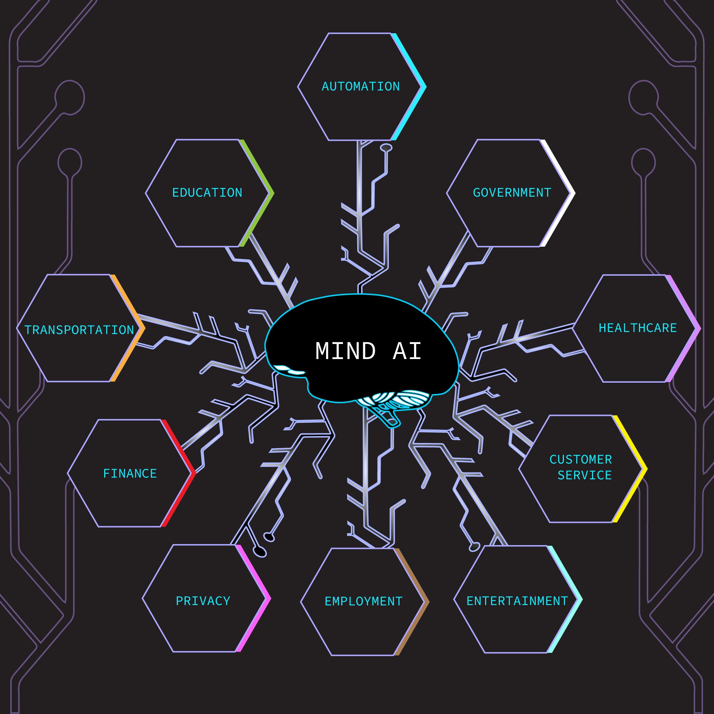

MIND AI is a 3D interactive website designed to provide a unique perspective on the development and potential impacts of artificial intelligence in major economic industries. At the heart of the website is a 3D model of an AI brain that is linked to the functions and vital parts of the human brain. By comparing the two, MIND AI aims to educate viewers on how the human brain has influenced the development of AI technology and serves as a tool for understanding its complexity. Using interactive models, animations, and data, MIND AI provides an engaging and informative experience that enables users to explore the societal impacts of AI in major industries such as Healthcare and Education. Each individual AI brain element contains research explaining the potential effects for that specific industry. Users gain access to this information by clicking on the individual parts. The research provided encourages viewers to maintain a balanced perspective on this rapidly evolving technology. Artificial intelligence can change the world, educating society on its potential is the right step to ensuring a future where this technology enhances our lives for the better.
Hello! My name is Aidan Engler, and I’m originally from North Carolina. I have a strong passion for both Digital Art and Analytics. Growing up, I loved building games, 3D modeling, and keeping up with the latest online trends. I often challenged myself by creating elaborate structures—hoping to impress my friends and push the boundaries of what was possible in the games I played. Now, I’m a student at NC State University, where I continue to explore and develop my interests in Digital Arts and Analytics. Thanks for visiting my website! If you have any questions or would like to connect, feel free to reach out.
LinkedIn